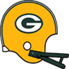

Game of the Week: Green Bay Packers at Detroit LionsOur Expert Predictions:
Jeremy Piper : Detroit Lions
Looking at how the teams match up, it is likely that John Elway - QB is the guy to watch, this man is pivotal to the Lions offense. If they do not win, I have to buy cake for the entire office. That is how sure I am.
Mary Moore : Detroit Lions
When you think of the players that will be on the field, certainly Tim Harris - DE needs to show up, but if he does the Lions defense is very stingy.
Jim Nox : Green Bay Packers
They will keep their winstreak going.
Darren Francis : Green Bay Packers
You just have to look at their defense. They are 1st in points allowed, averaging only 11.2. They are 4th in pass defense. They only give up 186.6 per game. They are 2nd in interceptions with 8. They are 3rd in the league in tackles for loss.
Week 5: RB Jim Brown (GB) wins Offensive Player of the Week The honor comes after Brown's 29 att, 187 yds, 1 TD performance against the Chicago Cardinals. Brown from Syracuse was selected in round 1, 5 years ago. Brown now has 750 Rushing Yards and 6 Touchdowns for the season. Week 5: LB William Thomas (NYT) wins Defensive Player of the Week LB William Thomas of the New York Titans has earned the Defensive Player of the Week award. Thomas finished with 12 Tck, 1 Int, 1 Def TD. LB William Thomas of the New York Titans has earned the Defensive Player of the Week award. Thomas finished with 12 Tck, 1 Int, 1 Def TD.
Game Recaps for Week 5Ravens - 35, Giants - 31
Monarchs - 35, Colts - 20
Dolphins - 24, Buccaneers - 17
Lions - 27, Kings - 19
Packers - 20, Cardinals - 10
Bears - 41, Bengals - 16
Bills - 55, Raiders - 34
Titans - 30, Seahawks - 28
Vikings - 27, Falcons - 23
49ers - 36, Commanders - 3Game of the Week: Detroit Lions at Louisville KingsOur Expert Predictions:
Jeremy Piper : Louisville Kings
People tend to underestimate their defense. They are 5th in points allowed, averaging only 20.2. This may be where we see their true colors.
Mary Moore : Louisville Kings
We are doing a sweepstakes at the network, and I look forward to raking in the winnings for this bet.
Jim Nox : Louisville Kings
Looking at how the teams match up, I cannot help but think that Jerry Gray - CB has to potential to carry the Kings defense.
Darren Francis : Detroit Lions
The Lions have really strong team play. You look at a player like Randall Godfrey - LB and what he does for a team. He makes everyone around him better. They will put up a lot of points.
Coach Showdown with Simon Sly (Season 1991 Week 5)Welcome to Coach Showdown with me. I'm Simon Sly. We have an odd couple for you this week.
BROCK LESNAR, HEAD COACH, MINNESOTA VIKINGS
The Vikings currently sit at 1-3-0.
Brock Lesnar wants his offense and defense to play smart, conservative football. Let the other team make the mistakes. He is a silent, strong leader. He does his job meticulously without making unnecessary waves, and expects those around him to do the same.
Lesnar outperforms Driscoll in scouting.
PADDY DRISCOLL, HEAD COACH, CHICAGO CARDINALS
The Cardinals currently sit at 2-2-0.
Paddy Driscoll wants to be aggressive on both sides of the ball. Professionalism is the key for him. He demands accountability from everyone around him.
Driscoll is slightly more detail oriented than Lesnar.
Driscoll seems a little bit smarter than Lesnar.
Driscoll makes his players hit the weight room more often than Lesnar.
Week 4: QB John Elway (DET) wins Offensive Player of the Week The league announced Detroit Lions quarterback John Elway has been named Offensive Player of the Week. The league announced Detroit Lions quarterback John Elway has been named Offensive Player of the Week.
The Lions defeated the Minnesota Vikings, 42 to 29. Elway did his part, throwing 4 touchdowns, completing 40 of 48 passes for 387 yards. His outstanding performance now brings his season Touchdown to Interception Ratio to 7 to 3, and a passer rating of 104.7.
Week 4: LB Lawrence Taylor (BUF) wins Defensive Player of the Week LB Taylor absolutely dominated in the Bills 17-7 game with the London Monarchs. He finished with 13 Tck, 4 Sck. LB Taylor absolutely dominated in the Bills 17-7 game with the London Monarchs. He finished with 13 Tck, 4 Sck.
Game Recaps for Week 4Bills - 17, Monarchs - 7
Titans - 20, Dolphins - 16
Raiders - 28, Kings - 21
Seahawks - 37, Cardinals - 17
Ravens - 34, Bengals - 28
Colts - 17, Falcons - 7
Commanders - 38, Buccaneers - 36
Lions - 42, Vikings - 29
Packers - 16, 49ers - 13
Bears - 18, Giants - 10Game of the Week: London Monarchs at Buffalo BillsOur Expert Predictions:
Jeremy Piper : London Monarchs
I do not think their offense gets enough credit. They are 4th in the league pass completion percentage. They are 1st in the league passing touchdowns with 11. They are 1st in the league passing yards per game. They average 335.7! They are maulers, 4th in the league in pancakes. They are 1st in the league points scored per game. They average 39.7!
Mary Moore : Buffalo Bills
I am sure head coach Marv Levy has something up his sleeve for this game. He makes great offensive adjustments. He is innovative with his defense. He will out-prepare any opponent. They will put up a lot of points.
Jim Nox : London Monarchs
You just have to look at their defense. They are 2nd in the league in tackles for loss. They are 4th in forced fumbles.
Darren Francis : London Monarchs
Of course the Monarchs win! With team players like Marcus McNeill - T and Kyle Clifton - LB who make everyone around them better, how could they not? I see a lot of points being scored in this game.
Bernhard Raimann optimistic about the future. Bernhard Raimann was optimistic in his postgame interview after the loss to the Bears. Bernhard Raimann - T was upbeat in his assessment after the Chicago lost a close game to the Raimann. 'We learned a lot. We showed a lot. There is reason for optimism. We are very close, and we keep building every week.', Raimann said smiling confidently. Bernhard Raimann was optimistic in his postgame interview after the loss to the Bears. Bernhard Raimann - T was upbeat in his assessment after the Chicago lost a close game to the Raimann. 'We learned a lot. We showed a lot. There is reason for optimism. We are very close, and we keep building every week.', Raimann said smiling confidently.
Week 3: RB Kenneth Walker III (MIN) wins Offensive Player of the Week The honor comes after Walker III's 17 att, 171 yds, 3 TD, 3 rec, 52 yds, 0 TD performance against the Oakland Raiders. Walker III from Michigan St. was selected in round 2, 2 years ago. The honor comes after Walker III's 17 att, 171 yds, 3 TD, 3 rec, 52 yds, 0 TD performance against the Oakland Raiders. Walker III from Michigan St. was selected in round 2, 2 years ago.
Walker III now has 279 Rushing Yards and 3 Touchdowns for the season.
Week 3: FS Kyle Hamilton (DET) wins Defensive Player of the WeekFS Hamilton's ball hawking ability was on display in the Lions 17-10 game with the New York Giants. He finished with 6 Tck, 1 Int, 1 Def TD.
"Kyle has the unique ability to make plays and generate turnovers." -Lions Defensive CoordinatorGame Recaps for Week 3Bills - 48, Falcons - 17
Commanders - 37, Titans - 6
Seahawks - 30, 49ers - 16
Vikings - 42, Raiders - 14
Kings - 31, Ravens - 10
Monarchs - 41, Cardinals - 20
Dolphins - 35, Bengals - 17
Lions - 17, Giants - 10
Packers - 24, Colts - 6
Bears - 49, Buccaneers - 37Game of the Week: Indianapolis Colts at Green Bay PackersOur Expert Predictions:
Jeremy Piper : Green Bay Packers
This is a dominant offense.
Mary Moore : Indianapolis Colts
They might even blow them out.
Jim Nox : Indianapolis Colts
They are on a win streak. They will continue that streak. They will win this game.
Darren Francis : Green Bay Packers
Boy, oh boy am I looking forward to this.
John Michels calls out Falcons Head Coach Slot after loss. John Michels pointed the finger at his coaches in analyzing the Falcons loss. 'We have to step up, all of us' he said, and continued: 'But they, the coaches, have to get us ready and have the right gameplan. Well, we were not ready and we had the wrong gameplan'. 'Sure, we lost, but we were playing well. I think this is a testament to our character and preparation' said the Falcons T. He added: 'The Buccaneers are a good team, but I we played our hearts out and kept grinding. We learned a lot from this game, and it will help us in the future'. John Michels pointed the finger at his coaches in analyzing the Falcons loss. 'We have to step up, all of us' he said, and continued: 'But they, the coaches, have to get us ready and have the right gameplan. Well, we were not ready and we had the wrong gameplan'. 'Sure, we lost, but we were playing well. I think this is a testament to our character and preparation' said the Falcons T. He added: 'The Buccaneers are a good team, but I we played our hearts out and kept grinding. We learned a lot from this game, and it will help us in the future'.
Coach Showdown with Simon Sly (Season 1991 Week 3)Simon Sly is back with this week's edition of Coach Showdown. Let us jump right in.
SAM WYCHE, OFFENSIVE COORDINATOR, CINCINNATI BENGALS
The Bengals currently sit at 1-1-0.
Sam Wyche runs his offense conservatively. His attitude is relaxed, and he is good at making everyone around him feel comfortable and promotes a friendly and unceremonial atmosphere in the organization.
Sam Wyche runs a run first None offense. He wants his running backs to focus on running the ball, limiting their other duties. He runs mostly from power formations. Fullbacks are not utilized much. He wants his quarterbacks to stay in the pocket and deliver the ball. He wants his quarterbacks to stay in the pocket and deliver the ball.
They are 8th in the league pass completion percentage. They are 7th in the league passing touchdowns with 3. They are 6th in the league passing yards per game. Averaging 262.5.They are 8th in the league in sacks allowed.They are 13th in the league in pancakes.They are 15th in the league in passes of more than 20 yards.They are 10th in the league average yards per rush.They are 9th in the league rushing touchdowns with 2.They are 15th in the league rushing yards per game. They average 103.They are 12th in the league points scored per game. With an average of 26.
KAY STEPHENSON, OFFENSIVE COORDINATOR, BUFFALO BILLS
The Bills currently sit at 2-0-0.
Kay Stephenson runs his offense conservatively. His attitude is relaxed, and he is good at making everyone around him feel comfortable and promotes a friendly and unceremonial atmosphere in the organization.
Kay Stephenson runs a run first None offense. He wants his running backs to focus on running the ball, limiting their other duties. He runs mostly from power formations. Fullbacks are not utilized much. He wants his quarterbacks to stay in the pocket and deliver the ball. He wants his quarterbacks to stay in the pocket and deliver the ball.
They are 10th in the league pass completion percentage.
They are 8th in the league passing touchdowns with 3.
They are 13th in the league passing yards per game. Averaging 188.5.
They are 9th in the league in sacks allowed.
They are 20th in the league in pancakes.
They are 7th in the league in passes of more than 20 yards.
They are 9th in the league average yards per rush.
They are 4th in the league rushing touchdowns with 5.
They are 12th in the league rushing yards per game. They average 125.
They are 7th in the league points scored per game. With an average of 31.
Stephenson outperforms Wyche in scouting.
Week 2: RB Marcus Allen (DET) wins Offensive Player of the WeekWeek 2's Offensive Player of the Week is Running Back Marcus Allen. His 15 att, 111 yds, 4 TD, 9 rec, 64 yds, 0 TD performance stood out in the 30 to 9 victory for the Detroit Lions.
The former USC gridiron star is racking up the rushing yards and now has 130 Yards and 4 Touchdowns for the season.Week 2: DE Chris Doleman (IND) wins Defensive Player of the Week DE Doleman absolutely dominated in the Colts 47-14 game with the New York Giants. He finished with 3 Tck, 3 Sck. DE Doleman absolutely dominated in the Colts 47-14 game with the New York Giants. He finished with 3 Tck, 3 Sck.
Game Recaps for Week 2Monarchs - 40, Ravens - 32
Bills - 28, Dolphins - 23
Bengals - 34, Raiders - 31
Kings - 31, Seahawks - 28
Cardinals - 40, Titans - 21
Colts - 47, Giants - 14
Buccaneers - 34, Falcons - 31
Bears - 23, Vikings - 13
Lions - 30, 49ers - 9
Packers - 30, Commanders - 7Game of the Week: Louisville Kings at Seattle SeahawksOur Expert Predictions:
Jeremy Piper : Louisville Kings
I really like their defense.
Mary Moore : Louisville Kings
The Kings are a much better team than everyone thinks I am looking forward to watching this showdown.
Jim Nox : Seattle Seahawks
Team gelling matters in games like this. And when I look at the Seahawks and the players they have who excel at organizing their teammates, players such as Irving Fryar - WR, Randall Cunningham - QB and Ted Washington - DT, I think the Seahawks get the win. But it will be a close game.
Darren Francis : Seattle Seahawks
The leadership on the Seahawks is great. You look at guys like Randall Cunningham - QB and what he does for a team. Leadership like that helps you win games. But it will be a close game.
Week 1: QB Dan Marino (LON) wins Offensive Player of the Week The London Monarchs' Dan Marino threw 5 touchdowns, completing 22 of 30 passes for 405 yards in the Giants victory over the London Monarchs. The London Monarchs' Dan Marino threw 5 touchdowns, completing 22 of 30 passes for 405 yards in the Giants victory over the London Monarchs.
After being drafted in Round 1 of the 1985 amateur draft, season number 6 for Marino, has seen some impressive numbers including 5 touchdown passes this season.
Week 1: LB Takeo Spikes (GB) wins Defensive Player of the WeekLB Spikes absolutely dominated in the Packers 48-20 game with the New York Titans. He finished with 9 Tck, 2 Int, 1 Def TD.Game Recaps for Week 1Ravens - 33, Bears - 21
Giants - 41, Monarchs - 38
Bills - 34, Dolphins - 24
Colts - 26, Buccaneers - 22
Packers - 48, Titans - 20
Seahawks - 31, Vikings - 21
49ers - 43, Raiders - 10
Kings - 23, Lions - 15
Cardinals - 24, Commanders - 20
Falcons - 34, Bengals - 18Season PredictionsThe sports journalists association has published the results of this year's division prediction polls among their twenty top sports journalists.
AFC West: Seattle Seahawks with 8 votes (Runner up: Cincinnati Bengals with 7 votes)
AFC East: Buffalo Bills with 11 votes (Runner up: Baltimore Ravens with 7 votes)
NFC West: Chicago Bears with 11 votes (Runner up: Minnesota Vikings with 9 votes)
NFC East: New York Giants with 8 votes (Runner up: Indianapolis Colts with 7 votes)Game of the Week: New York Giants at London MonarchsOur Expert Predictions:
Jeremy Piper : London Monarchs
They will rely on their offense to pull them through.
Mary Moore : London Monarchs
Looking at how the teams match up, I cannot help but think that Wilber Marshall - LB is going to be a difference maker on the Monarchs defense. This will really be a statement win.
Jim Nox : New York Giants
I do not know why. I just have this hunch. This may be a pivotal game for their season.
Darren Francis : London Monarchs
One of the most underestimated defenses. Lots of points scored.
News from Training CampTraining camps have completed. Here is what we learned.
Far exceded expectations:
Seattle Seahawks: QB Chuck Long - QB
Louisville Kings: WR Mike Pritchard - WR
Buffalo Bills: LB Jesse Solomon - LB
London Monarchs: DE Drake Jackson - DE
Baltimore Ravens: WR Corey Bradford - WR
Baltimore Ravens: LB Jason Gildon - LB
Chicago Bears: FS Jalen Pitre - FS
Chicago Bears: DT Jim Flanigan - DT
Minnesota Vikings: CB Aaron Glenn - CB
Detroit Lions: DE Keith Ellison - DE
San Francisco 49ers: FS Reed Blankenship - FS
Indianapolis Colts: K Stephen Gostkowski - K
Atlanta Falcons: FB Joshua Ezeudu - FB
These guys were underwhelming to say the least:
Chicago Bears: WR Johnny Lam Jones - WR
Washington Commanders: DT Travis Jones - DT
New York Giants: WR Al Toon - WR
Post Free Agency RetirementsThe following players have retired after going unsigned through free agency:
RB June Henley - RB
RB Darryl Clack - RB
RB Tremayne Stephens - RB
RB Ken Oxendine - RB
RB Rashaan Shehee - RB
RB Richard Huntley - RB
RB Chris Smith - RB
RB Ricky Moore - RB
RB Vance Mueller - RB
G Ron Tilton - G
G Kevin Dogins - G
G Ikechuku Ndukwe - G
T Brett Miller - T
T Bryan Millard - T
T Bill Hitchcock - T
T Terrance Pennington - T
TE Kaseem Sinceno - TE
TE Robert Stallings - TE
TE Blake Spence - TE
TE Carl Hilton - TE
WR Carlos Carson - WR
WR Micheal Spurlock - WR
WR Donald Hayes - WR
WR Chuck Scott - WR
WR Emile Harry - WR
WR Solomon Miller - WR
WR Eric Swanson - WR
WR Patrick Johnson - WR
WR Tony Horne - WR
WR Jessie Britt - WR
WR Trumaine Johnson - WR
WR Kamil Loud - WR
WR E.G. Green - WR
CB Don McNeal - CB
CB Jason Simmons - CB
CB Joey Eloms - CB
CB Cornell Gowdy - CB
CB Chris Sheffield - CB
CB Mike Harden - CB
CB Tim Jennings - CB
CB Clarence Love - CB
CB Brian Walker - CB
CB Jarrett Bush - CB
LB Buster Davis - LB
LB Kivuusama Mays - LB
LB Rick DiBernardo - LB
LB Spencer Reid - LB
LB Ty Allert - LB
LB Ron Monaco - LB
LB Larry Station - LB
LB Kevin O'Neill - LB
LB Ray Phillips - LB
LB Zack Walz - LB
LB Aaron Pearson - LB
LB Darren Hambrick - LB
LB Rogers Alexander - LB
LB Jeff Gooch - LB
DT Scott Kellar - DT
DT Henry Slay - DT
DT Jerome Sally - DT
DT James Cannida - DT
DE Mike Hammerstein - DE
DE Ralph Malone - DE
DE Reggie Lowe - DE
FS Kevin Smith - FS
FS Elbert Watts - FS
FS Tim Morrison - FS
FS Kyle Morrell - FS
FS David Croudip - FS
FS Vestee Jackson - FS
FS Ricky Easmon - FS
FS Greg Lasker - FS
FS Tawambi Settles - FSLB Nate Wayne (N/A) has retired!LB Nate Wayne - LB (67 ovr) has retired after failing to get signed in free agency.TE Alonzo Mayes (N/A) has retired!TE Alonzo Mayes - TE (64 ovr) has retired after failing to get signed in free agency.CB Robert Ducksworth (N/A) has retired!CB Robert Ducksworth - CB (71 ovr) has retired after failing to get signed in free agency.DE Deacon Jones (GB) goes #1 overall!NEW YORK -- The Green Bay Packers drafted Deacon Jones #1 overall in the 1991 draft. The 6' 5" DE fits the team's needs perfectly. Said Packers general manager: "It's up to us to develop him and get good players around him."
"The great thing about the game of football is, it's a team game," Jones said on a conference call. "I'm just going to be one piece of the puzzle."Moore and Nox Mock DraftPick 1: Green Bay Packers
Larry Moore: Deacon Jones - DE
He is driven by the love of the sport. Has developed nice strength for being this early in his career. More than enough speed for the position. This will become evident as he develops. A great tackler. Consistent. It is not often that the talent available fits perfectly with what you need. When it does, it makes for a win-win situation. This young man is going to be put in a position to succeed.
Jim Nox: Deacon Jones - DE
This is the kind of kid you want to promote the game. Well behaved, loves the game, and respectful. Strong enough to come of the edge in the pros. Will never become a speed rush specialist, but has sufficient speed to become a prototype Defensive End. Solid tackler. They need players at the position, and good ones at that. He fits the bill, he is worth the pick. End of story.
Pick 2: Washington Commanders
Larry Moore: Brad Johnson - QB
Known for showing up early and staying late. The guy has gets along with everyone. He trusts what he sees, and what he sees is mostly right. He is accurate enough to place the ball where the receiver can make the play. Receivers need to be on their toes because he throws hard. Fill a need, get a quality player, everyone wins! He will fit right in with the pros.
Jim Nox: Thad Castle - LB
His college coaches talk highly of his work ethic. His good natured behavior, even toward opponents have earned him some criticism, but also an awful lot of respect. Known for helping out teammates, if they hit a rough patch, whether it is on the field or in their personal lives. His physical foundation given him an nice ceiling. Fast enough to get around slower Offensive Tackles. Rock solid player is just what they need. A great fit here, both in terms of need and quality.
Pick 3: New York Titans
Larry Moore: Mean Joe Greene - DT
The type of strength coaches love to field at the center of the line. Will hold off blockers on run plays and collapse the pocket on pass plays. Is sufficiently fast to stay on the field against the pass. That is important if you are going to draft a guy this early. He is a well developed tackler, this is something teams look for. It saves a lot of time when the fundamentals are good. When the available talent fits what you need, there is reason to celebrate. They are getting a great talent who will serve them for many years.
Jim Nox: Mean Joe Greene - DT
Powerful! He can succesfully bull rush fully grown offensive linemen. This is the kind of kid you can use to anchor the center of your line.Good jump off the line. Enough speed to be unpredictable in his passrushing moves. Tackles low and with good technique. They need players at the position, and good ones at that. He fits the bill, he is worth the pick. End of story.
Pick 4: Chicago Bears
Larry Moore: Bobby Layne - QB
This is a player who takes the lead. He is fundamentally a good kid. You rarely see him commit stupid penalties. Liked by coaches and teammates. Plays with intelligence. Already making good throws, and that is even with no seasons of pro training. Sufficient arm strength for the pro game. He fills a need for them. Great pick here.
Jim Nox: Brad Johnson - QB
Known among his teammates as a hard worker. Known for helping out teammates, if they hit a rough patch, whether it is on the field or in their personal lives. Can diagnose coverages well. Will deliver the ball to the target with nice accuracy. Has the arm strength to keep defenses on their toes. They need him now. Well yesterday actually. They will love him tomorrow. They will revere him by the end of his career.
Pick 5: Minnesota Vikings
Larry Moore: Willie McGinest - DE
Teammates look to him for leadership, and he consistently delivers. His college coaches talk highly of his work ethic. This kid breeds synergy, teams play better when he is on the field. Has sufficient strength to play with the big boys in the pros. Offenses will need to keep tabs on him. He will close down fairly quickly if left unblocked. Consistently takes down ball carrier on tackles. They should not be afraid to fill a need here. He will start day one. Quality pick right here.
Jim Nox: Willie McGinest - DE
A real leader! This kid puts in the work. He plays well with others. He understands there is a reason for each assignment on every play. Definitely good strength for a Defensive End. Will shed blocks and occasionally bull rush smaller opponents. Offenses will need to keep tabs on him. He will close down fairly quickly if left unblocked. It is clear from his tape, that he wraps up well on tackles. Once this kid gets in the building, they will be set at this position for years.
Pick 6: Seattle Seahawks
Larry Moore: Tom Nalen - C
This kid puts in the work. The muscles on this kid should allow him to hold his own against pro competition. If you go to his tape, you will se he run blocks very well. Very coachable. Take the blue-chip player. Do not worry about sexier picks. He fits what you need and the quality is there.
Jim Nox: Tom Nalen - C
This guy understands what it means to be a pro. This kid loves the weight room, and has developed nice strength for being this early in his career. Run blocking is very different when facing college kids than the full-grown men in the pros. This kid has the skills to do the latter. Very coachable. That is an important trait for a guy you want to draft this early. This guy is available. This guy fills a need. They have to take him. It makes so much sense.
Pick 7: Oakland Raiders
Larry Moore: Thad Castle - LB
Due to his work ethic, this kid is very coachable. His good natured behavior, even toward opponents have earned him some criticism, but also an awful lot of respect. Known for helping out teammates, if they hit a rough patch, whether it is on the field or in their personal lives. Love his strength. He can play everywhere on the line. It is no coincidence he has attracted a lot of attention. Not exactly a speed rusher, but has plenty of speed for the position. Do not be afraid to draft a position of need here. This kid is well worthy of a pick this early. Perfect situation for him, and great fit for the team.
Jim Nox: Aaron Glenn - CB
Teammates look to him for leadership, and he consistently delivers. Sportsmanship, love of the sport and respect, is what you get with him. Known among his teammates as a bit of a goofball, but never in a bad way. The kind that keeps spirits high even when a season goes south. Speedy enough to cover. Will need to cushion a bit on the faster receivers, but they will account for that in the play design. No point in getting to the ball carrier if you cannot take him down. This kid tackles well. That is something teams are looking at. Makes smart decisions. They will be running to the podium for this one.
Pick 8: Detroit Lions
Larry Moore: Todd Steussie - T
Was among the stronger offensive linemen in college. Scouts love his understanding for opening running lanes in the running game. Bright kid, reacts well on the field. Nothing to think about here. Pick up the kid, bring him into the building, put him om the field.
Jim Nox: Todd Steussie - T
He has sufficient strength to have a chance against grown men on the defensive line. Execution in the running game is something coaches have noticed about him. He blocks pretty well. Good understanding of the game, and what is required of each position. He addresses a need for them.
Pick 9: San Diego Chargers
Larry Moore: Marshall Faulk - RB
Every team would benefit from his leadership. In addition to his own role, this kid doubles as glue. He makes everyone on the field play as a team. His movement skills are good. He hits the hole with good speed. He will occasionally throw of defenders who do not wrap when tackling him. A player that fits their needs. The promise of a future star. This will be great for the franchise.
Jim Nox: Marshall Faulk - RB
The kind of leadership he shows makes coaches salivate. 'Team player', this is the correct term for him. He makes everyone around him better. He reads the field well. His speed compliments his game well. His strength is good, and will only get better with professional training. This guy is available. This guy fills a need. They have to take him. It makes so much sense.
Pick 10: Seattle Seahawks
Larry Moore: Walt Sweeney - G
The guy has his head on straight. The guy has gets along with everyone. Has nice technique when blocking on run plays. Keeps his leverage and finishes his blocks. He fills a hole at the position. Blue-chip player. Will fit right in and start right away. Love it.
Jim Nox: Walt Sweeney - G
Here you have a kid who puts in the work to succeed. Liked by coaches and teammates. Execution in the running game is something coaches have noticed about him. He blocks pretty well. Once this kid gets in the building, they will be set at this position for years.
Offseason Team Needs with Jeremy PiperWith a new offseason under way, some rosters are in good shape. However, other teams have big needs to address this offseason. Your always trusty Jeremy Piper here brings you a quick glance at the teams with work to do. Whether they fill their needs in the draft or with veterans in free agency remains to be seen.
Here we go:
Oakland Raiders: QB WR CB LB DT DE FS
Cincinnati Bengals: G T
Seattle Seahawks: G T C WR
Chicago Cardinals: G T TE WR CB LB DT FS SS
San Diego Chargers: RB T TE WR LB DT SS
New York Titans: T C TE WR DT FS
Buffalo Bills: T TE LB DE SS
Miami Dolphins: QB G WR DT DE
London Monarchs: QB CB DT
Baltimore Ravens: G WR LB DT DE
Green Bay Packers: TE CB DE FS
Chicago Bears: QB T C
Minnesota Vikings: CB DT DE
Detroit Lions: RB T C
San Francisco 49ers: G TE LB DE
Washington Commanders: QB RB T C TE CB LB DE FS
New York Giants: TE CB LB DT SS
Indianapolis Colts: LB DE
Atlanta Falcons: T WR DT FS SS
Tampa Bay Buccaneers: QB WR DT
Draft Order: Green Bay Packers own first overall.Pick 1: Green Bay Packers
Pick 2: Washington Commanders
Pick 3: New York Titans
Pick 4: Chicago Bears (from Chicago Cardinals)
Pick 5: Minnesota Vikings (from Atlanta Falcons)
Pick 6: Seattle Seahawks
Pick 7: Oakland Raiders
Pick 8: Detroit Lions
Pick 9: San Diego Chargers
Pick 10: Seattle Seahawks (from Minnesota Vikings)
Pick 11: Buffalo Bills
Pick 12: Minnesota Vikings (from Indianapolis Colts)
Pick 13: San Francisco 49ers
Pick 14: Cincinnati Bengals
Pick 15: Miami Dolphins
Pick 16: Minnesota Vikings (from Tampa Bay Buccaneers)
Pick 17: Chicago Bears
Pick 18: Baltimore Ravens
Pick 19: San Diego Chargers (from London Monarchs)
Pick 20: Green Bay Packers (from New York Giants)
Players Holding OutThe following players want a new contract, and have announced their intention to hold out:
A.J. Hawk - LB (Cincinnati Bengals)
Randy Gradishar - LB (Chicago Cardinals)
Mike Williams - WR (Detroit Lions)
John Mobley - LB (Atlanta Falcons)
To Dexter Manley - DE, the past is the past.Dexter Manley is a great story, having worked his way out of a troubled youth. To many, Manley is becoming a posterboy for the league's ability to help talented young men rehabilitate themselves through sports.To Jacob Bender - T, the past is the past.Jacob Bender is a great story, having worked his way out of a troubled youth. To many, Bender is becoming a posterboy for the league's ability to help talented young men rehabilitate themselves through sports.Active Player Retirements
Seattle Seahawks:
WR Art Monk - WR (6 seasons) 553 rec, 6462 yds, 36 TD
Chicago Cardinals:
DT Ken Clarke - DT (6 seasons) 40 Tck, 3 Sck, 2 FF
Buffalo Bills:
T Ken Lanier - T (6 seasons) 354 Pancakes
DT Darryl Grant - DT (6 seasons) 106 Tck, 15 Sck, 5 FF, 1 FR
Miami Dolphins:
K Gary Anderson K - K (6 seasons) 139/197 FG
FB Mike Alstott - FB (5 seasons) 97 att, 279 yds, 42 TD, 6 rec, 24 yds, 2 TD
Baltimore Ravens:
WR Mark Nichols - WR (6 seasons) 157 rec, 1911 yds, 13 TD
Washington Commanders:
CB Fulton Walker - CB (6 seasons) 28 Tck, 1 FF, 1 FR
New York Giants:
RB Lionel James - RB (6 seasons) 229 att, 921 yds, 7 TD, 43 rec, 340 yds, 0 TD
Notable free agent retirements
QB:
Warren Moon (6 seasons pro) 1530/2211, 19240 yds, 144 TD
Gary Hogeboom (6 seasons pro) 459/678, 4548 yds, 34 TD
David Woodley (6 seasons pro) 149/232, 1664 yds, 10 TD
RB:
Tony Nathan (6 seasons pro) 514 att, 2292 yds, 21 TD, 7 rec, 57 yds, 1 TD
Butch Woolfolk (6 seasons pro) 314 att, 929 yds, 6 TD, 39 rec, 325 yds, 4 TD
George Rogers (6 seasons pro) 326 att, 1607 yds, 15 TD, 20 rec, 151 yds, 1 TD
Hubie Oliver (6 seasons pro) 168 att, 637 yds, 7 TD, 9 rec, 67 yds, 1 TD
Eddie Fuller (4 seasons pro) 0 att, 0 yds, 0 TD
G:
Dean Miraldi (6 seasons pro) 219 Pancakes
Jim Ritcher (6 seasons pro) 259 Pancakes
John Hannah (6 seasons pro) 255 Pancakes
Max Montoya (6 seasons pro) 173 Pancakes
Chris Dieterich (6 seasons pro) 118 Pancakes
T:
Paul Farren (6 seasons pro) 120 Pancakes
Eric Sanders (6 seasons pro) 46 Pancakes
Cleveland Green (6 seasons pro) 47 Pancakes
C:
Guy Bingham (6 seasons pro) 67 Pancakes
TE:
Walt Arnold (6 seasons pro) 50 rec, 271 yds, 2 TD
WR:
Jim Jensen (6 seasons pro) 162 rec, 1985 yds, 14 TD
Jerry Butler (6 seasons pro) 105 rec, 1121 yds, 9 TD
Shane Garrett (4 seasons pro) 26 rec, 340 yds, 0 TD
Terry Guess (5 seasons pro) 8 rec, 143 yds, 2 TD
CB:
Willie Tullis (6 seasons pro) 205 Tck, 3 Sck, 10 Int, 2 FF, 1 FR
Dwight Hicks (6 seasons pro) 264 Tck, 1 Sck, 5 Int, 1 Def TD, 4 FF, 4 FR
LB:
Steve Busick (6 seasons pro) 107 Tck, 11 Sck, 2 Int, 2 FF, 2 FR
Steve Nelson (6 seasons pro) 238 Tck, 8 Sck, 2 Int, 1 Sfty, 5 FF, 4 FR
DE:
Rulon Jones (6 seasons pro) 136 Tck, 13 Sck, 7 FF, 1 FR
Jacob Green (6 seasons pro) 65 Tck, 8 Sck, 4 FF, 3 FR
Kevin Brooks (6 seasons pro) 37 Tck, 3 Sck
Donnell Thompson (6 seasons pro) 79 Tck, 4 Sck, 6 FF, 3 FR
Jim Stuckey (6 seasons pro) 22 Tck, 7 Sck, 3 FF, 1 FR
SS:
Mark Haynes (6 seasons pro) 427 Tck, 18 Sck, 2 Int, 1 Def TD, 5 FF, 2 FR
Roland James (6 seasons pro) 388 Tck, 12 Sck, 3 Int, 7 FF, 4 FR
Mark Murphy (6 seasons pro) 155 Tck, 2 Sck, 2 Int, 2 FF, 1 FR
Kenny Hill (6 seasons pro) 139 Tck, 4 Sck, 1 Int, 4 FF, 3 FR
Lloyd Burruss (6 seasons pro) 133 Tck, 3 Sck, 2 Int, 3 FF, 2 FR
Dennis Thurman (6 seasons pro) 104 Tck, 2 Int, 1 Def TD
K:
Tony Franklin (6 seasons pro) 114/166 FG
P:
Maury Buford (6 seasons pro) 13546 yards, 105 inside 20
Don Bracken (6 seasons pro) 9570 yards, 62 inside 20
Other retirements
QB Koy Detmer - QB (69 ovr)
QB Eric Kresser - QB (67 ovr)
QB Ray Lucas - QB (68 ovr)
QB Wally Richardson - QB (66 ovr)
QB Frank Seurer - QB (66 ovr)
QB Sam Hartman - QB (67 ovr)
QB Brennan Armstrong - QB (68 ovr)
QB Joe Shield - QB (66 ovr)
QB Reggie Collier - QB (67 ovr)
QB Tom Ramsey - QB (64 ovr)
QB Jack Trudeau - QB (62 ovr)
QB Babe Laufenberg - QB (63 ovr)
QB Spencer Sanders - QB (61 ovr)
QB Dustin Crum - QB (61 ovr)
QB D'Eriq King - QB (58 ovr)
RB Dalton Hilliard - RB (78 ovr)
RB Napoleon McCallum - RB (79 ovr)
RB Michael Pittman - RB (76 ovr)
RB Julius Chestnut - RB (74 ovr)
RB Anthony Toney - RB (73 ovr)
RB Ty Chandler - RB (73 ovr)
RB Harold Shaw - RB (70 ovr)
RB Hassan Haskins - RB (72 ovr)
RB Zamir White - RB (70 ovr)
RB Zonovan Knight - RB (70 ovr)
RB Keaontay Ingram - RB (70 ovr)
RB Jordan Mason - RB (71 ovr)
RB Kelvin Bryant - RB (68 ovr)
RB John Williams - RB (69 ovr)
RB Raheem Blackshear - RB (70 ovr)
RB Scott Williams - RB (68 ovr)
RB Ronnie Rivers - RB (69 ovr)
RB Brittain Brown - RB (69 ovr)
RB Jonathan Linton - RB (68 ovr)
RB Broderick Sargent - RB (67 ovr)
RB Tavian Banks - RB (68 ovr)
RB Karim Abdul-Jabbar - RB (68 ovr)
RB Mack Boatner - RB (67 ovr)
RB Brandon Bennett - RB (67 ovr)
RB Skip Hicks - RB (67 ovr)
RB Tony Boddie - RB (64 ovr)
RB Carlos King - RB (64 ovr)
RB Jermaine Williams - RB (65 ovr)
RB James Bostic - RB (65 ovr)
RB Craig Ellis - RB (64 ovr)
RB Leeland McElroy - RB (64 ovr)
RB Michael Hicks - RB (64 ovr)
RB Rick Badanjek - RB (63 ovr)
RB Buford Jordan - RB (62 ovr)
RB Dan Reeder - RB (63 ovr)
RB Corey Walker - RB (62 ovr)
RB Jason Bratton II - RB (57 ovr)
FB Randy McMillan - FB (84 ovr)
FB Mike Sellers - FB (72 ovr)
FB Jon Ritchie - FB (71 ovr)
FB Jammie Jammie-Jammie - FB (68 ovr)
FB Grunky Peep - FB (67 ovr)
FB Goolius Boozler - FB (67 ovr)
FB Frreestyl Snorez - FB (67 ovr)
FB Paul Ott Carruth - FB (62 ovr)
FB Robert Thomas - FB (60 ovr)
G Zachary Thomas - G (74 ovr)
G Brent Smith - G (71 ovr)
G Mark Adickes - G (70 ovr)
G Luke Wattenberg - G (70 ovr)
G Dave Fiore - G (69 ovr)
G Jerome Daniels - G (68 ovr)
G Pat Saindon - G (68 ovr)
G Damian Johnson - G (69 ovr)
G Ja'Tyre Carter - G (69 ovr)
G Waverly Jackson - G (68 ovr)
G Nick Zakelj - G (67 ovr)
G Alec Anderson - G (68 ovr)
G Josh Sills - G (68 ovr)
G Xavier Newman - G (67 ovr)
G Jeff Pahukoa - G (67 ovr)
G Scott Shaw - G (66 ovr)
G Chris Paul - G (66 ovr)
G Mike Caliendo - G (68 ovr)
G Chuck Commiskey - G (65 ovr)
G Mike Ruether - G (64 ovr)
G Tom Neville - G (64 ovr)
G Chris Banks - G (64 ovr)
G Mike Haight - G (64 ovr)
G Jeff Wiska - G (63 ovr)
G Harvey Dahl - G (63 ovr)
G Chris Riehm - G (62 ovr)
G Nick Haden - G (62 ovr)
G Michael Durrette - G (62 ovr)
T Matt Lepsis - T (73 ovr)
T Barry Stokes - T (71 ovr)
T Vederian Lowe - T (69 ovr)
T Don Maggs - T (69 ovr)
T Dan Remsberg - T (67 ovr)
T Allen DeGraffenreid - T (67 ovr)
T Curt Singer - T (67 ovr)
T J.D. Maarleveld - T (67 ovr)
T Joe Conwell - T (68 ovr)
T Thayer Munford Jr - T (67 ovr)
T Matt Waletzko - T (67 ovr)
T Rob Taylor - T (66 ovr)
T Greg Feasel - T (66 ovr)
T Mark Behning - T (66 ovr)
T Dylan Cook - T (66 ovr)
T Jim Gilmore - T (65 ovr)
T Ryan Van Demark - T (63 ovr)
T Luke Tenuta - T (65 ovr)
T Greg Robinson - T (64 ovr)
T Jose Portilla - T (63 ovr)
T Devin Cochran - T (63 ovr)
T Doug Williams - T (61 ovr)
T Kion Smith - T (62 ovr)
T Jason Capizzi - T (62 ovr)
T Glen Howe - T (61 ovr)
T Joe Toledo - T (60 ovr)
C Kevin Long - C (73 ovr)
C Jay Pennison - C (74 ovr)
C Jeff Mitchell - C (70 ovr)
C Doug Kramer - C (71 ovr)
C Mark Fischer - C (68 ovr)
C Cade Mays - C (68 ovr)
C Mike Kiselak - C (67 ovr)
C Jason Johnson - C (66 ovr)
C Bill Cherry - C (67 ovr)
C Eric Beverly - C (66 ovr)
C Jim Romano - C (65 ovr)
C Steve Gordon - C (65 ovr)
C Brian Johnston - C (64 ovr)
C TJ Juckson - C (63 ovr)
C Balakay HaHa-Lloydoonius Sr - C (61 ovr)
C Scoish Velociraptor Maloish - C (61 ovr)
C Rod Payne - C (62 ovr)
C Jeff Bostic - C (59 ovr)
TE Cam Cleeland - TE (73 ovr)
TE Andrew Ogletree - TE (70 ovr)
TE James Mitchell - TE (70 ovr)
TE Cole Turner - TE (67 ovr)
TE Connor Heyward - TE (68 ovr)
TE Charlie Kolar - TE (68 ovr)
TE Andy Haase - TE (67 ovr)
TE Mikhael Ricks - TE (66 ovr)
TE Damone Johnson - TE (64 ovr)
TE Teagan Quitoriano - TE (65 ovr)
TE Balakay HaHa-Lloydoonius Sr's Cousin BeefDaddy - TE (67 ovr)
TE Luther Broughton - TE (64 ovr)
TE Gordon Hudson - TE (65 ovr)
TE Chris Fontenot - TE (64 ovr)
TE Warren Seitz - TE (65 ovr)
TE Stone Smartt - TE (62 ovr)
TE Josh Wilcox - TE (63 ovr)
TE Jeff Spek - TE (63 ovr)
TE Itula Mili - TE (64 ovr)
TE Joey Hackett - TE (63 ovr)
TE Cal Adomitis - TE (63 ovr)
TE John Frank - TE (63 ovr)
TE Mike Waters - TE (62 ovr)
TE Jim Laughton - TE (64 ovr)
TE Todd Frain - TE (62 ovr)
TE Terry Orr - TE (60 ovr)
TE Darren Long - TE (61 ovr)
TE Earl Cooper - TE (58 ovr)
WR Kerry Reed - WR (78 ovr)
WR Jacquez Green - WR (78 ovr)
WR Freddie Scott Jr. - WR (74 ovr)
WR Josh Ali - WR (71 ovr)
WR Dareke Young - WR (72 ovr)
WR Alvis Whitted - WR (71 ovr)
WR Walter Murray - WR (70 ovr)
WR Don Holmes - WR (69 ovr)
WR Michael Woods II - WR (69 ovr)
WR Gerald McNeil - WR (70 ovr)
WR Herbert Harris - WR (69 ovr)
WR Samori Toure - WR (68 ovr)
WR Alex Van Dyke - WR (70 ovr)
WR Aubrey Matthews - WR (68 ovr)
WR Jim Gustafson - WR (68 ovr)
WR Willie Gillespie - WR (68 ovr)
WR Joey Jones - WR (69 ovr)
WR Nolan Franz - WR (68 ovr)
WR Derek Holloway - WR (69 ovr)
WR David Bell - WR (68 ovr)
WR Justyn Ross - WR (68 ovr)
WR Brandon Johnson WR - WR (68 ovr)
WR Jammi German - WR (67 ovr)
WR Timmie Ware - WR (67 ovr)
WR Ryan Thelwell - WR (66 ovr)
WR Leonard Harris - WR (67 ovr)
WR Terry Greer - WR (67 ovr)
WR Alex Johnson - WR (67 ovr)
WR Alonzo Johnson - WR (66 ovr)
WR James Harbour - WR (67 ovr)
WR Derrick Mayes - WR (66 ovr)
WR Chris Francies - WR (65 ovr)
WR Rodney Williams - WR (64 ovr)
WR Scott Holman - WR (66 ovr)
WR Robert Wilson - WR (65 ovr)
WR Karl Hankton - WR (65 ovr)
WR Ronnie Anderson - WR (66 ovr)
WR Walter Broughton - WR (65 ovr)
WR Michael Harper - WR (64 ovr)
WR Rod Barksdale - WR (63 ovr)
WR Troy Johnson - WR (64 ovr)
WR Tony Simmons - WR (62 ovr)
WR Lew Barnes - WR (62 ovr)
WR Derrick Crawford - WR (62 ovr)
CB Jaylon Jones - CB (72 ovr)
CB Deane Leonard - CB (73 ovr)
CB Izell Reese - CB (72 ovr)
CB Antonio Gibson - CB (72 ovr)
CB Jalyn Armour-Davis - CB (70 ovr)
CB Samuel Womack III - CB (72 ovr)
CB Mark Harper - CB (72 ovr)
CB Damarion Williams - CB (71 ovr)
CB Sam Webb - CB (70 ovr)
CB Gregory Junior - CB (70 ovr)
CB Ja'Sir Taylor - CB (68 ovr)
CB Josh Blackwell - CB (67 ovr)
CB Darrell Baker Jr - CB (69 ovr)
CB Dwight Drane - CB (65 ovr)
CB Kory Blackwell - CB (68 ovr)
CB Montaric Brown - CB (66 ovr)
CB Jason Kaiser - CB (66 ovr)
CB Steve Brown - CB (65 ovr)
CB Antonio Banks - CB (64 ovr)
CB Victor Jackson - CB (65 ovr)
CB David Evans - CB (65 ovr)
CB Tim Denton - CB (62 ovr)
CB Jim Perryman - CB (60 ovr)
CB Keith Lee - CB (58 ovr)
LB Myjai Sanders - LB (72 ovr)
LB Melvin Bullitt - LB (75 ovr)
LB Tom Cousineau - LB (73 ovr)
LB Chance Campbell - LB (72 ovr)
LB Jake Hansen - LB (71 ovr)
LB Mike Johnson - LB (70 ovr)
LB Ray Bentley - LB (71 ovr)
LB Zach VanValkenburg - LB (69 ovr)
LB Segun Olubi - LB (70 ovr)
LB Jeremiah Moon - LB (70 ovr)
LB Deangelo Malone - LB (70 ovr)
LB Jesse Luketa - LB (69 ovr)
LB Jack Cochrane - LB (70 ovr)
LB Chandler Wooten - LB (69 ovr)
LB Baylon Spector - LB (70 ovr)
LB Hillary Butler - LB (67 ovr)
LB Jackie Walker - LB (68 ovr)
LB Kevin McArthur - LB (68 ovr)
LB Calvin Daniels - LB (67 ovr)
LB Jamie Kimmel - LB (67 ovr)
LB Dana Cottrell - LB (66 ovr)
LB Ratcliff Thomas - LB (67 ovr)
LB Eugene Lockhart - LB (65 ovr)
LB Jeff Leiding - LB (66 ovr)
LB Antony Jordan - LB (67 ovr)
LB Ike Reese - LB (67 ovr)
LB Mitch Palmer - LB (66 ovr)
LB Jerrott Willard - LB (64 ovr)
LB Freddie Keiaho - LB (66 ovr)
LB Phillip Ward - LB (64 ovr)
LB Chris Bordano - LB (64 ovr)
LB Greg Favors - LB (64 ovr)
LB Mike Weddington - LB (65 ovr)
LB DeShone Myles - LB (64 ovr)
LB Andy Hendel - LB (63 ovr)
LB Reggie Givens - LB (63 ovr)
LB Jon Hesse - LB (61 ovr)
LB Joe Krakoski - LB (60 ovr)
LB James Johnson - LB (60 ovr)
LB Jimmy Sprotte - LB (61 ovr)
LB Malcolm Hamilton - LB (60 ovr)
LB Kiki DeAyala - LB (60 ovr)
LB John Fiala - LB (59 ovr)
LB Bruce Scholtz - LB (57 ovr)
DT Ernie Stautner - DT (75 ovr)
DT Kurt Hinish - DT (70 ovr)
DT John Ridgeway - DT (67 ovr)
DT Austin Faoliu - DT (68 ovr)
DT Eric Johnson II - DT (68 ovr)
DT Curtis Brooks - DT (68 ovr)
DT Chuck Klingbeil - DT (67 ovr)
DT Sheldon Andrus - DT (66 ovr)
DT Neil Farrell - DT (66 ovr)
DT Otito Ogbonnia - DT (65 ovr)
DT Bob Clasby - DT (66 ovr)
DT Kalia Davis - DT (63 ovr)
DT Terry Unrein - DT (64 ovr)
DT Zachary Carter - DT (62 ovr)
DT Mike Moten - DT (60 ovr)
DT Kevin Kellin - DT (61 ovr)
DT Alvin Wright - DT (62 ovr)
DT Doug Brown - DT (60 ovr)
DT Lynn Madsen - DT (60 ovr)
DT Glen Steele - DT (61 ovr)
DT Tim Colston - DT (56 ovr)
DT Chuck Osborne - DT (58 ovr)
DT Lester Williams - DT (57 ovr)
DT Ben Williams - DT (56 ovr)
DE Eric Hicks - DE (78 ovr)
DE Ray McDonald - DE (76 ovr)
DE Alex Wright - DE (74 ovr)
DE Jason Peter - DE (74 ovr)
DE Jeff Hunter - DE (71 ovr)
DE Leonard Griffin - DE (71 ovr)
DE Anthony Smith - DE (69 ovr)
DE Van Hughes - DE (70 ovr)
DE Josh Paschal - DE (68 ovr)
DE Ben Stille - DE (65 ovr)
DE LaBryan Ray - DE (68 ovr)
DE Kingsley Jonathan - DE (65 ovr)
DE Matt Henningsen - DE (66 ovr)
DE Mike Hamby - DE (67 ovr)
DE Lamanzer Williams - DE (66 ovr)
DE Corey Sears - DE (65 ovr)
DE Elijah Garcia - DE (65 ovr)
DE Dorian Boose - DE (66 ovr)
DE Jason Chorak - DE (65 ovr)
DE Bob Otto - DE (64 ovr)
DE Gary Dulin - DE (64 ovr)
DE DeMarvin Leal - DE (62 ovr)
DE Craig Patterson - DE (63 ovr)
DE Joe Costello - DE (63 ovr)
DE Shawn Swayda - DE (63 ovr)
DE Billy Lyon - DE (65 ovr)
DE Sam Roberts - DE (64 ovr)
DE Mike Greene - DE (64 ovr)
DE Smiley Creswell - DE (61 ovr)
DE Jeff Tupper - DE (61 ovr)
DE Marvin Thomas - DE (60 ovr)
DE Freddie Gilbert - DE (59 ovr)
FS Artrell Hawkins - FS (76 ovr)
FS Ron Pitts - FS (71 ovr)
FS Earl Little - FS (71 ovr)
FS Theo Jackson - FS (72 ovr)
FS Isaiah Pola-Mao - FS (69 ovr)
FS Markquese Bell - FS (71 ovr)
FS Bret Clark - FS (69 ovr)
FS Fred Weary - FS (69 ovr)
FS Robert Bailey - FS (68 ovr)
FS Trevor Denbow - FS (68 ovr)
FS Michel'le ThakFu-Gidgetsdad - FS (67 ovr)
FS Cordell Taylor - FS (68 ovr)
FS Devon Mitchell - FS (68 ovr)
FS Vito McKeever - FS (66 ovr)
FS Dell McGee - FS (67 ovr)
FS Lupe Sanchez - FS (65 ovr)
FS Kerry Joseph - FS (66 ovr)
FS David Martin - FS (65 ovr)
FS Anthony Tuggle - FS (64 ovr)
FS Dennis Woodberry - FS (65 ovr)
FS William Graham - FS (63 ovr)
FS Donovan Greer - FS (63 ovr)
FS George Coghill - FS (63 ovr)
SS Juanyeh Thomas - SS (69 ovr)
SS Tony Adams - SS (67 ovr)
SS Mike Brown - SS (67 ovr)
SS Nazeeh Johnson - SS (67 ovr)
SS Quentin Lake - SS (67 ovr)
SS Mickey Sutton - SS (66 ovr)
SS Andre Bitchcakes-Beeloozen - SS (66 ovr)
SS Scott McGarrahan - SS (66 ovr)
SS David Greenwood - SS (64 ovr)
SS Demetrious Johnson - SS (66 ovr)
SS Ryan Sutter - SS (65 ovr)
SS Duane Starks - SS (65 ovr)
SS Steve Wilson DB - SS (64 ovr)
SS Qwuantrezz Knight - SS (63 ovr)
SS Kerry Cooks - SS (63 ovr)
SS Raheem Layne - SS (60 ovr)
K Cameron Dicker - K (70 ovr)
K Jess Atkinson - K (65 ovr)
K Ladadadaladadadadada Dala-Dadaladaladalada - K (61 ovr)
K Swirvithan L'Goodling-Splatt - K (60 ovr)
K Tom Servo - K (61 ovr)
K T'varisuness King - K (60 ovr)
P Trenton Gill - P (67 ovr)
P Kyle Richardson - P (62 ovr)
P Brad Costello - P (63 ovr)
P Vincent Gamache - P (63 ovr)
P Atl TwentyEight-NE III - P (61 ovr)
P Eddie Howard - P (60 ovr)
P Bill Renner - P (61 ovr)
P Alex Waits - P (57 ovr)
P Jack Weil - P (56 ovr)
|
 Bengals
Bengals Bills
Bills Cardinals
Cardinals Dolphins
Dolphins Kings
Kings Monarchs
Monarchs Raiders
Raiders Ravens
Ravens Seahawks
Seahawks Titans
Titans 49ers
49ers Bears
Bears Buccaneers
Buccaneers Colts
Colts Commanders
Commanders Falcons
Falcons Giants
Giants Lions
Lions Packers
Packers Vikings
Vikings